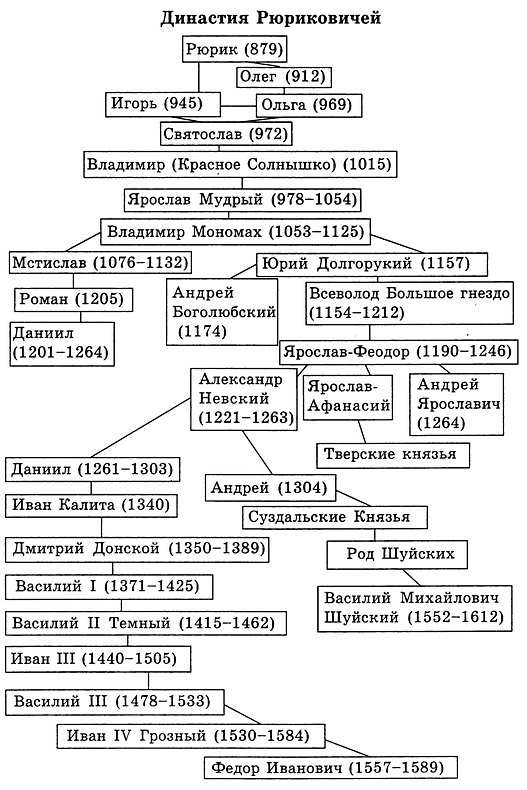

Рю́риковичи — княжеский, великокняжеский, позднее также царский (в России) и королевский (в Галицко-Волынской земле) род потомков Рюрика — первого летописного князя древней Руси. С течением времени род раздробился на множество ветвей. Большинство правителей Киевской Руси и образовавшихся после её распада русских княжеств были Рюриковичами. Представители одной из ветвей (потомки Ростислава Михайловича) были удельными правителями в Венгерско-Хорватском королевстве, единичные представители Рюриковичей правили в Великом княжестве Литовском (Шварн) и провозглашали свою власть в Болгарском царстве (Ростислав Михайлович), были соправителями Грузинского царства (Юрий Андреевич Боголюбский), герцогства Австрия и герцогства Штирия (Роман Данилович), также, возможно, были правителями Великопермского княжества (см. Великопермские князья) и Моравского княжества (см. Олег Моравский). Последними монархами из числа Рюриковичей были цари Фёдор I Иоаннович и Василий Шуйский.
